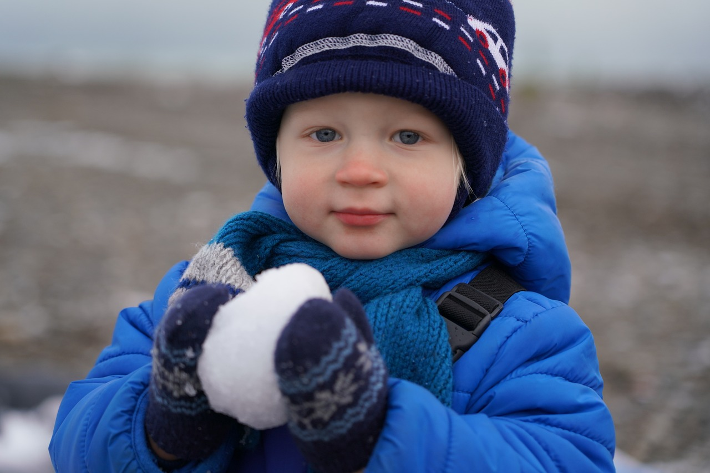

Cine este Valeriu?
Valeriu este un băiat de 12 ani care locuiește în Chișinău. Este curios, pasionat de tehnologie și îi place să își petreacă timpul liber descoperind lucruri noi.
Unde învață Valeriu?
Valeriu învață la Liceul „Mihai Eminescu” din Chișinău, în clasa a șasea. Este un elev silitor, iar materia sa preferată este matematica. De asemenea, participă activ în clubul de robotică al școlii.
Ce face Valeriu în timpul liber?
- Sport: Joacă fotbal în echipa locală de juniori.
- Hobby-uri creative: Construiește modele de Lego și încearcă să creeze animații simple pe calculator.
- Lectură: Valeriu adoră să citească povești SF și benzi desenate.
- Familie și prieteni: Petrece mult timp alături de sora lui mai mică, Maria, și de prietenii din cartier.